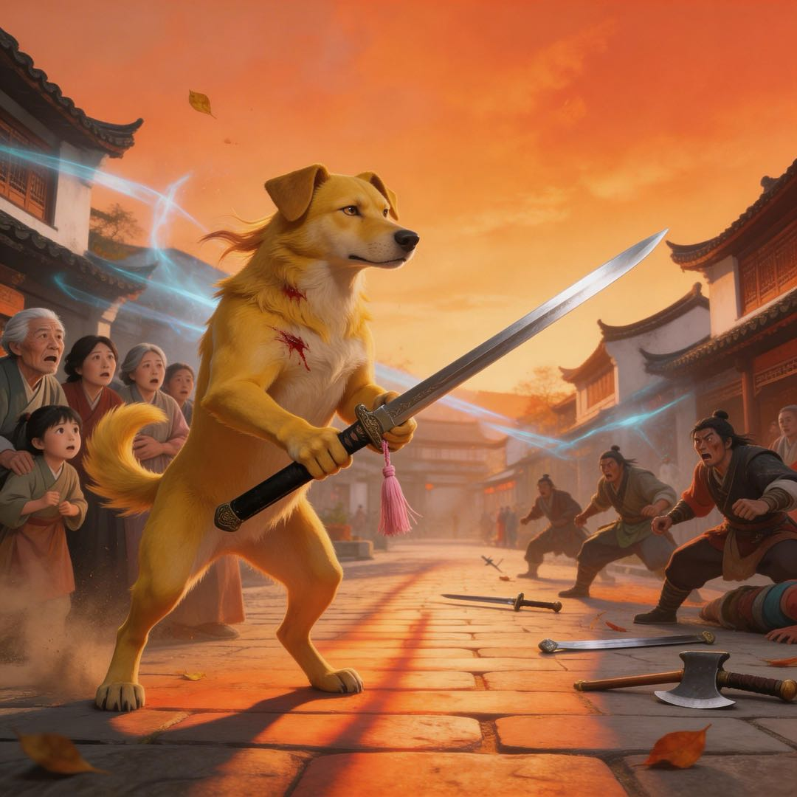

一只不会说话的小狗妖，如何成为真正的剑客
阿黄闻到了一股味道。
不是骨头的香味，不是酒的醇味，是血的味道。
它抬起头，黄昏的光线斜斜地照进巷子。巷子尽头，两个人对峙着。一个老剑客，靠墙站着，胸口有伤，血正慢慢渗出来。一个黑衣修士，手里拿着滴血的剑，周身气息如山压境，压得巷子里的空气都凝固了。
阿黄本来在酒馆后巷的垃圾桶里翻骨头。望江楼的掌柜是个圆脸大叔，话多，心软，默许它在这儿找吃的。今天没什么好货，翻了半天，只得了几根啃净的骨头。
就在这时，望江楼的后门推开了一道缝。一块酱牛肉从里面扔出来，正好落在阿黄爪子前。它抬起头。
老剑客站在门口，看了它一眼，转身就走。
阿黄认识他——每天傍晚，这老头都会来望江楼喝一壶酒，固定坐靠墙的角落。老板默默倒酒，他默默喝，喝完就走，从不搭话。阿黄有时候会跟在他后面，不是为了讨吃的，就是觉得……这老头身上有种味道。
不是酒味，不是血腥味，是孤独的味道。
就像它自己一样。
阿黄叼起那块酱牛肉，香得不得了，舍不得吃，正准备找个安全的地方慢慢享用——
然后它闻到了血。
黑衣修士动了。剑光一闪，直刺老剑客的心口。老剑客想躲，但胸口的伤让他慢了半拍。
阿黄不知道自己为什么要冲上去。它只是一只连人形都化不了的狗妖，那黑衣修士的气息，随便一根手指就能碾死它。
但它就是冲上去了。
出发前，它把嘴里那块酱牛肉轻轻放到了地上。没有犹豫，就是放下了。
它咬向黑衣修士的脚踝。不是乱咬，是本能地找到了一个点——那里护体灵气最薄，像盔甲上的一道裂缝。牙齿刺破皮肤的瞬间，阿黄尝到了血的味道，腥的，烫的。
黑衣修士吃痛，剑势一偏。
就这一偏的功夫，老剑客动了。他手里的剑原本垂在地上，像根废铁。但那一刻，剑活了。
剑光如虹。
黑衣修士倒下的时候，眼睛还睁着，似乎不敢相信。老剑客靠在墙上，喘着气，剑尖垂地，血顺着剑身流下来，滴在青石板上。
没多久，阿黄闻到一股焦糊的气息——修士的尸身化作一缕青烟，散进了夜风里。那是修士殒命后元气散尽的味道，阿黄不懂，但它记住了。
他低头看了阿黄一眼。"时机不错。"声音不大，像是自言自语。
阿黄后退两步，把地上那块酱牛肉推到老剑客脚边。
那是它舍不得吃的宝贝。
老剑客低头看着它，又看看那块肉。"跟着我没好处。"他说。
阿黄不说话，只是摇尾巴。
老剑客沉默了一会儿，转身走了。阿黄叼起那块肉，跟在他后面。
巷子很深，青石板路的缝隙里长满青苔。黄昏的光线一点点暗下去，两个人的影子被拉得很长。一个佝偻的老人，一只瘦小的黄狗。
出了巷子，他们经过一条小街。一个小女孩蹲在街边，正用树枝戳一只死虫子，嘴里哼着什么调子。约莫六七岁，粉色的裙角沾了泥巴，对周围毫无所知。
老剑客的脚步顿了一下。就一下。
阿黄不懂，但它闻到了——酒气里，忽然混进了一点咸的味道，涩的，沉的，像被踩进了青石板缝里的东西。
他们走进小镇边缘的一个小院。院里有棵老桃树，树干歪斜，但春天开花时一定很美。
阿黄把肉放在门口，趴了下来。
它闻到了院子里的味道——酒味，香灰味，还有……眼泪的味道。咸咸的，涩涩的。它不懂为什么会有眼泪的味道，但它记住了。
老剑客没有赶它走。
阿黄赖在小院不走了。
老剑客赶过它三次。第一次用扫帚，第二次用脚，第三次……第三次他根本没出来，只是隔着门喊了一声"滚"。
阿黄没滚。它趴在院门口，耳朵贴着地面，听着院子里的动静。老剑客在练剑，剑锋破空的声音，一下，一下，像心跳。
第四天早上，老剑客推开门。巷子里有小孩跑过去的声音，他的目光顿了一下。然后他低头，看见阿黄还在那儿，瘦了一圈，但眼睛亮晶晶的。
"你倒是执着。"老剑客说。
他从屋里拿出一根树枝，扔到阿黄面前。"玩。"
阿黄叼起树枝。树枝很轻，没有肉的香味，但有……一股铁的气息，凉的，又不凉，像老剑客身上那种味道。它不懂，只是下意识地甩了甩头，树枝在空中划出一道弧线。
老剑客的眼睛眯了一下。
从那天起，阿黄开始学着挥剑。它用头甩树枝，一下，一下，在院子里转圈。爪子在地上刨出坑，尾巴摇得像风车。
老剑客在屋里喝酒，透过窗户看着它。"有点意思。"他轻声说。
阿黄开始试着站起来。后腿发抖，前爪紧紧抓着树枝，像抓着什么重要的东西。它摔倒了，爬起来，再摔倒，再爬起来。
老剑客在窗后看着，数着："一、二、三……"数到第七次的时候，他转身从柜子里拿出一瓶酒，倒了一杯，洒在地上。
"敬你。"他说。
阿黄听不懂，但它闻到了——酒气里，第一次混进了一点……暖的味道。
春天，阿黄用爪子包扎伤口。夏天，它在瀑布下练平衡。秋天，它踩着落叶练步法。冬天，老剑客传它第一套剑法。
四季轮转，阿黄的剑越来越稳。它还是不会说话，但它的眼睛越来越亮。
老剑客每天给李小丫的牌位上香。阿黄记住了这个名字——李小丫。它记住了眼泪的味道，记住了香灰的味道，记住了老剑客每次上香时，那种沉得抬不起头的味道。
"叼着剑，你只能当一只会咬人的狗。"老剑客说，"握着剑，你才能当剑客。"
阿黄似懂非懂。它只是继续练，一天一天，一年一年。
强盗来了。五个，都是炼气期，领头的那个圆满，气息最盛。
阿黄挡在老剑客的小院前。它没有吼，只是静静地站着，爪子按在地上，尾巴垂着。
强盗头子笑了："哪来的野狗，滚开。"
阿黄动了。它没有扑，没有咬，只是用剑柄敲了一下强盗头子的膝盖。强盗头子跪下了，疼得站不起来。
其他四个强盗冲上来。阿黄的剑光一闪，四个人的手腕都中了剑，剑掉在地上，人跪在地上。
"滚。"阿黄第一次发出声音。不是人话，是低吼，但强盗听懂了。
强盗们连滚带爬地跑了。
老剑客从院子里走出来，看着阿黄。"你刚才可以杀了他们。"
阿黄摇头。
"为什么？"
阿黄看着老剑客，眼睛里有东西。它不会说话，但它的眼神在说：守护比杀戮更难。
老剑客沉默了很久。"好。"他说，"你出师了。"
老剑客从柜子里拿出一个粉色的剑穗。那是李小丫的遗物，他做了很多年，但没来得及送出去。
"拿着。"他说。
阿黄看着剑穗，又看看老剑客。它张开嘴，第一次发出了人声：
"师父。"
老剑客的眼泪掉下来了。他转过身，不想让阿黄看见。"臭小子，别死在外面。"
阿黄走了。它走到村口，回头看了一眼。老剑客站在院门口，身影佝偻，但背挺得很直。
阿黄深吸一口气，身体开始变化。黄色的毛发退去，四肢变成人形，最后，一个少年站在村口。
他穿着普通布衣，背着一把剑，剑柄上系着粉色的剑穗。头发是黄色的，眼睛亮晶晶的。
他转身，走向远方。
小院里，老剑客站在李小丫的牌位前。"小丫，你看，爷爷没看错人。"
牌位静静地立在那里，香灰的味道，混着一点暖的味道，飘进风里。